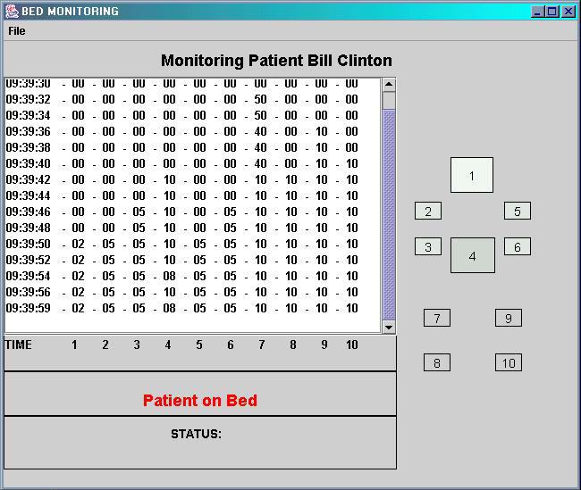
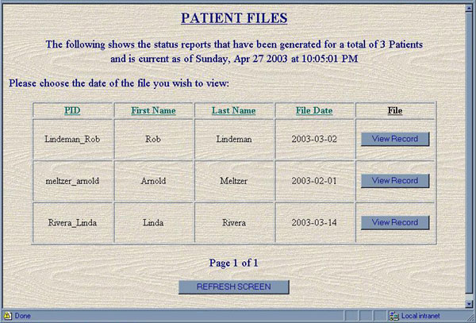

Sensor-Oriented Bed Monitor Program:
Sensors attached to a bed will be used to obtain pressure data that will be used by the program to determine the position of a person lying on the flat bed. The sensor system will send a stream of bits through a serial port to a personal computer. At the computer level, a graphical user interface will be available to allow the health practitioner to monitor the movement of a person in the bed and determine to what degree the person has moved. The screen display will facilitate nurses' decisions on whether to let the patient rest or tend to the patient because of an emergency. Furthermore, a message is displayed when an emergency situation is detected based on the movement patterns on the bed surface. Periodically, the input that has been displayed to the screen will be logged in an output file on a server, which can be accessed by the health practitioner from a Web interface.

